Chapter 15 · Software Reuse
Source review
The original source text, examples, tables and caveats remain available. Source slide numbers and textbook PDF pages are different references. Historical assertions stay attributed to this edition; this page is not a current legal, medical, regulatory or product guide. Classroom activities are labelled separately.
Required selections
- Reuse approaches and planning: original slides 12–15
- Frameworks and inversion of control: original slides 16–21
Apply one named source concept to the chapter artifact and explain its effect. Finish any uncompleted core topic here; material does not become optional merely because it is reviewed after class. Assignment dates and marks remain in Blackboard.
Original source-slide ledger
Slide 1 · Chapter 15 – Software Reuse
Slide 2 · Topics covered
Topics covered The reuse landscape Application frameworks Software product lines Application system reuse
Slide 3 · Software reuse
Software reuse In most engineering disciplines, systems are designed by composing existing components that have been used in other systems. Software engineering has been more focused on original development but it is now recognised that to achieve better software, more quickly and at lower cost, we need a design process that is based on systematic software reuse. There has been a major switch to reuse-based development over the past 10 years.
Slide 4 · Reuse-based software engineering
Reuse-based software engineering System reuse Complete systems, which may include several application programs may be reused. Application reuse An application may be reused either by incorporating it without change into other or by developing application families. Component reuse Components of an application from sub-systems to single objects may be reused. Object and function reuse Small-scale software components that implement a single well-defined object or function may be reused.
Slide 5 · Benefits of software reuse
Benefits of software reuse
Slide 6 · Benefits of software reuse
Benefits of software reuse
Slide 7 · Problems with reuse
Problems with reuse
Slide 8 · Problems with reuse
Problems with reuse
Slide 9 · The reuse landscape
The reuse landscape
Slide 10 · The reuse landscape
The reuse landscape Although reuse is often simply thought of as the reuse of system components, there are many different approaches to reuse that may be used. Reuse is possible at a range of levels from simple functions to complete application systems. The reuse landscape covers the range of possible reuse techniques.
Slide 11 · The reuse landscape
The reuse landscape
Slide 12 · Approaches that support software reuse
Approaches that support software reuse
Slide 13 · Approaches that support software reuse
Approaches that support software reuse
Slide 14 · Approaches that support software reuse
Approaches that support software reuse
Slide 15 · Reuse planning factors
Reuse planning factors The development schedule for the software. The expected software lifetime. The background, skills and experience of the development team. The criticality of the software and its non-functional requirements. The application domain. The execution platform for the software.
Slide 16 · Application frameworks
Application frameworks
Slide 17 · Framework definition
Framework definition “..an integrated set of software artefacts (such as classes, objects and components) that collaborate to provide a reusable architecture for a family of related applications.”
Slide 18 · Application frameworks
Application frameworks Frameworks are moderately large entities that can be reused. They are somewhere between system and component reuse. Frameworks are a sub-system design made up of a collection of abstract and concrete classes and the interfaces between them. The sub-system is implemented by adding components to fill in parts of the design and by instantiating the abstract classes in the framework.
Slide 19 · Web application frameworks
Web application frameworks Support the construction of dynamic websites as a front-end for web applications. WAFs are now available for all of the commonly used web programming languages e.g. Java, Python, Ruby, etc. Interaction model is based on the Model-View-Controller composite pattern.
Slide 20 · Model-view controller
Model-view controller System infrastructure framework for GUI design. Allows for multiple presentations of an object and separate interactions with these presentations. MVC framework involves the instantiation of a number of patterns (as discussed in Chapter 7).
Slide 21 · The Model-View-Controller pattern
The Model-View-Controller pattern
Slide 22 · WAF features
WAF features Security WAFs may include classes to help implement user authentication (login) and access. Dynamic web pages Classes are provided to help you define web page templates and to populate these dynamically from the system database. Database support The framework may provide classes that provide an abstract interface to different databases. Session management Classes to create and manage sessions (a number of interactions with the system by a user) are usually part of a WAF. User interaction Most web frameworks now provide AJAX support (Holdener, 2008), which allows more interactive web pages to be created.
Slide 23 · Extending frameworks
Extending frameworks Frameworks are generic and are extended to create a more specific application or sub-system. They provide a skeleton architecture for the system. Extending the framework involves Adding concrete classes that inherit operations from abstract classes in the framework; Adding methods that are called in response to events that are recognised by the framework. Problem with frameworks is their complexity which means that it takes a long time to use them effectively.
Slide 24 · Inversion of control in frameworks
Inversion of control in frameworks
Slide 25 · Framework classes
Framework classes System infrastructure frameworks Support the development of system infrastructures such as communications, user interfaces and compilers. Middleware integration frameworks Standards and classes that support component communication and information exchange. Enterprise application frameworks Support the development of specific types of application such as telecommunications or financial systems.
Slide 26 · Software product lines
Software product lines
Slide 27 · Software product lines
Software product lines Software product lines or application families are applications with generic functionality that can be adapted and configured for use in a specific context. A software product line is a set of applications with a common architecture and shared components, with each application specialized to reflect different requirements. Adaptation may involve: Component and system configuration; Adding new components to the system; Selecting from a library of existing components; Modifying components to meet new requirements.
Slide 28 · Base systems for a software product line
Base systems for a software product line
Slide 29 · Base applications
Base applications Core components that provide infrastructure support. These are not usually modified when developing a new instance of the product line. Configurable components that may be modified and configured to specialize them to a new application. Sometimes, it is possible to reconfigure these components without changing their code by using a built-in component configuration language. Specialized, domain-specific components some or all of which may be replaced when a new instance of a product line is created.
Slide 30 · Application frameworks and product lines
Application frameworks and product lines Application frameworks rely on object-oriented features such as polymorphism to implement extensions. Product lines need not be object-oriented (e.g. embedded software for a mobile phone) Application frameworks focus on providing technical rather than domain-specific support. Product lines embed domain and platform information. Product lines often control applications for equipment. Software product lines are made up of a family of applications, usually owned by the same organization.
Slide 31 · Product line architectures
Product line architectures Architectures must be structured in such a way to separate different sub-systems and to allow them to be modified. The architecture should also separate entities and their descriptions and the higher levels in the system access entities through descriptions rather than directly.
Slide 32 · The architecture of a resource allocation system
The architecture of a resource allocation system
Slide 33 · The product line architecture of a vehicle dIspatcher
The product line architecture of a vehicle dIspatcher
Slide 34 · Vehicle dispatching
Vehicle dispatching A specialised resource management system where the aim is to allocate resources (vehicles) to handle incidents. Adaptations include: At the UI level, there are components for operator display and communications; At the I/O management level, there are components that handle authentication, reporting and route planning; At the resource management level, there are components for vehicle location and despatch, managing vehicle status and incident logging; The database includes equipment, vehicle and map databases.
Slide 35 · Product line specialisation
Product line specialisation Platform specialization Different versions of the application are developed for different platforms. Environment specialization Different versions of the application are created to handle different operating environments e.g. different types of communication equipment. Functional specialization Different versions of the application are created for customers with different requirements. Process specialization Different versions of the application are created to support different business processes.
Slide 36 · Product instance development
Product instance development
Slide 37 · Product instance development
Product instance development Elicit stakeholder requirements Use existing family member as a prototype Choose closest-fit family member Find the family member that best meets the requirements Re-negotiate requirements Adapt requirements as necessary to capabilities of the software Adapt existing system Develop new modules and make changes for family member Deliver new family member Document key features for further member development
Slide 38 · Product line configuration
Product line configuration Design time configuration The organization that is developing the software modifies a common product line core by developing, selecting or adapting components to create a new system for a customer. Deployment time configuration A generic system is designed for configuration by a customer or consultants working with the customer. Knowledge of the customer’s specific requirements and the system’s operating environment is embedded in configuration data that are used by the generic system.
Slide 39 · Deployment-time configuration
Deployment-time configuration
Slide 40 · Levels of deployment time configuration
Levels of deployment time configuration Component selection, where you select the modules in a system that provide the required functionality. Workflow and rule definition, where you define workflows (how information is processed, stage-by-stage) and validation rules that should apply to information entered by users or generated by the system. Parameter definition, where you specify the values of specific system parameters that reflect the instance of the application that you are creating
Slide 41 · Application system reuse
Application system reuse
Slide 42 · Application system reuse
Application system reuse An application system product is a software system that can be adapted for different customers without changing the source code of the system. Application systems have generic features and so can be used/reused in different environments. Application system products are adapted by using built-in configuration mechanisms that allow the functionality of the system to be tailored to specific customer needs. For example, in a hospital patient record system, separate input forms and output reports might be defined for different types of patient.
Slide 43 · Benefits of application system reuse
Benefits of application system reuse As with other types of reuse, more rapid deployment of a reliable system may be possible. It is possible to see what functionality is provided by the applications and so it is easier to judge whether or not they are likely to be suitable. Some development risks are avoided by using existing software. However, this approach has its own risks, as I discuss below. Businesses can focus on their core activity without having to devote a lot of resources to IT systems development. As operating platforms evolve, technology updates may be simplified as these are the responsibility of the COTS product vendor rather than the customer.
Slide 44 · Problems of application system reuse
Problems of application system reuse Requirements usually have to be adapted to reflect the functionality and mode of operation of the COTS product. The COTS product may be based on assumptions that are practically impossible to change. Choosing the right COTS system for an enterprise can be a difficult process, especially as many COTS products are not well documented. There may be a lack of local expertise to support systems development. The COTS product vendor controls system support and evolution.
Slide 45 · Configurable application systems
Configurable application systems Configurable application systems are generic application systems that may be designed to support a particular business type, business activity or, sometimes, a complete business enterprise. For example, an application system may be produced for dentists that handles appointments, dental records, patient recall, etc. Domain-specific systems, such as systems to support a business function (e.g. document management) provide functionality that is likely to be required by a range of potential users.
Slide 46 · COTS-solution and COTS-integrated systems
COTS-solution and COTS-integrated systems
Slide 47 · ERP systems
ERP systems An Enterprise Resource Planning (ERP) system is a generic system that supports common business processes such as ordering and invoicing, manufacturing, etc. These are very widely used in large companies - they represent probably the most common form of software reuse. The generic core is adapted by including modules and by incorporating knowledge of business processes and rules.
Slide 48 · The architecture of an ERP system
The architecture of an ERP system
Slide 49 · ERP architecture
ERP architecture A number of modules to support different business functions. A defined set of business processes, associated with each module, which relate to activities in that module. A common database that maintains information about all related business functions. A set of business rules that apply to all data in the database.
Slide 50 · ERP configuration
ERP configuration Selecting the required functionality from the system. Establishing a data model that defines how the organization’s data will be structured in the system database. Defining business rules that apply to that data. Defining the expected interactions with external systems. Designing the input forms and the output reports generated by the system. Designing new business processes that conform to the underlying process model supported by the system. Setting parameters that define how the system is deployed on its underlying platform.
Slide 51 · Integrated application systems
Integrated application systems Integrated application systems are applications that include two or more application system products and/or legacy application systems. You may use this approach when there is no single application system that meets all of your needs or when you wish to integrate a new application system with systems that you already use.
Slide 52 · Design choices
Design choices Which individual application systems offer the most appropriate functionality? Typically, there will be several application system products available, which can be combined in different ways. How will data be exchanged? Different products normally use unique data structures and formats. You have to write adaptors that convert from one representation to another. What features of a product will actually be used? Individual application systems may include more functionality than you need and functionality may be duplicated across different products.
Slide 53 · An integrated procurement system
An integrated procurement system
Slide 54 · Service-oriented interfaces
Service-oriented interfaces Application system integration can be simplified if a service-oriented approach is used. A service-oriented approach means allowing access to the application system’s functionality through a standard service interface, with a service for each discrete unit of functionality. Some applications may offer a service interface but, sometimes, this service interface has to be implemented by the system integrator. You have to program a wrapper that hides the application and provides externally visible services.
Slide 55 · Application wrapping
Application wrapping
Slide 56 · Application system integration problems
Application system integration problems Lack of control over functionality and performance Application systems may be less effective than they appear Problems with application system inter-operability Different application systems may make different assumptions that means integration is difficult No control over system evolution Application system vendors not system users control evolution Support from system vendors Application system vendors may not offer support over the lifetime of the product
Slide 57 · Key points
Key points There are many different ways to reuse software. These range from the reuse of classes and methods in libraries to the reuse of complete application systems. The advantages of software reuse are lower costs, faster software development and lower risks. System dependability is increased. Specialists can be used more effectively by concentrating their expertise on the design of reusable components. Application frameworks are collections of concrete and abstract objects that are designed for reuse through specialization and the addition of new objects. They usually incorporate good design practice through design patterns.
Slide 58 · Key points
Key points Software product lines are related applications that are developed from one or more base applications. A generic system is adapted and specialized to meet specific requirements for functionality, target platform or operational configuration. Application system reuse is concerned with the reuse of large-scale, off-the-shelf systems. These provide a lot of functionality and their reuse can radically reduce costs and development time. Systems may be developed by configuring a single, generic application system or by integrating two or more application systems. Potential problems with application system reuse include lack of control over functionality and performance, lack of control over system evolution, the need for support from external vendors and difficulties in ensuring that systems can inter-operate.
Preserved original source illustrations
Select a figure to inspect it at its original size. The original PDF/PPTX retains its full layout and vector diagrams.
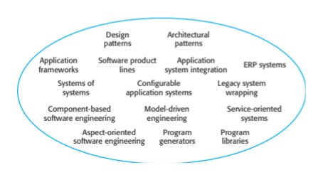
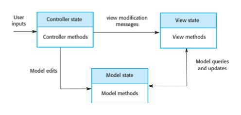
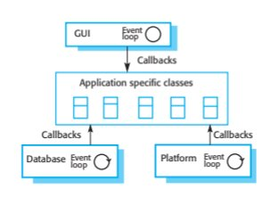
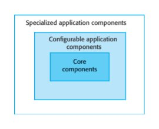
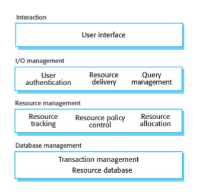
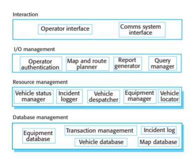
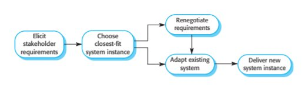
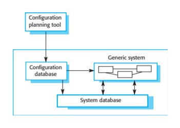
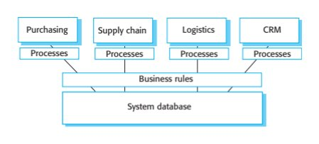
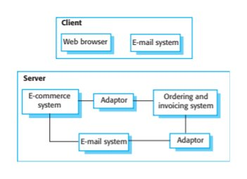
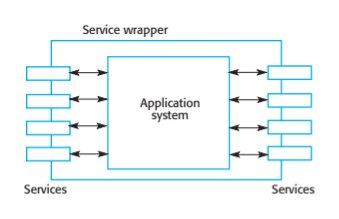
Supplied textbook chapter · complete text
The PDF remains authoritative for mathematical layout, figures and tables. Line wrapping and extraction artifacts may occur below; no textbook statement is replaced by a contemporary claim.
PDF page 1 · printed page 437
15
Software reuse
Objectives
The objectives of this chapter are to introduce software reuse and to
describe approaches to system development based on large-scale
software reuse. When you have read this chapter, you will:
■ understand the benefits and problems of reusing software when
developing new systems;
■ understand the concept of an application framework as a set of
reusable objects and how frameworks can be used in application
development;
■ have been introduced to software product lines, which are made up
of a common core architecture and reusable components that are
configured for each version of the product;
■ have learned how systems can be developed by configuring and
composing off-the-shelf application software systems.
Contents
15.1 The reuse landscape
15.2 Application frameworks
15.3 Software product lines
15.4 Application system reusePDF page 2 · printed page 438
438 Chapter 15 ■ Software reuse
Reuse-based software engineering is a software engineering strategy where the
development process is geared to reusing existing software. Until around 2000,
systematic software reuse was uncommon, but it is now used extensively in the
development of new business systems. The move to reuse-based development has
been in response to demands for lower software production and maintenance costs,
faster delivery of systems, and increased software quality. Companies see their
software as a valuable asset. They are promoting reuse of existing systems to
increase their return on software investments.
Reusable software of different kinds is now widely available. The open-source
movement has meant that there is a huge code base that can be reused. This may be in
the form of program libraries or entire applications. Many domain-specific application
systems, such as ERP systems, are available that can be tailored and adapted to cus-
tomer requirements. Some large companies provide a range of reusable components
for their customers. Standards, such as web service standards, have made it easier to
develop software services and reuse them across a range of applications.
Reuse-based software engineering is an approach to development that tries to
maximize the reuse of existing software. The software units that are reused may be
of radically different sizes. For example:
1. System reuse Complete systems, which may be made up of a number of
application programs, may be reused as part of a system of systems (Chapter 20).
2. Application reuse An application may be reused by incorporating it without
change into other systems or by configuring the application for different
customers. Alternatively, application families or software product lines that
have a common architecture, but that are adapted to individual customer
requirements, may be used to develop a new system.
3. Component reuse Components of an application, ranging in size from subsys-
tems to single objects, may be reused. For example, a pattern-matching system
developed as part of a text-processing system may be reused in a database
management system. Components may be hosted on the cloud or on private
servers and may be accessible through an application programming interface
(API) as services.
4. Object and function reuse Software components that implement a single func-
tion, such as a mathematical function, or an object class may be reused. This
form of reuse, designed around standard libraries, has been common for the past
40 years. Many libraries of functions and classes are freely available. You reuse
the classes and functions in these libraries by linking them with newly devel-
oped application code. In areas such as mathematical algorithms and graphics,
where specialized, expensive expertise is needed to develop efficient objects
and functions, reuse is particularly cost-effective.
All software systems and components that include generic functionality are
potentially reusable. However, these systems or components are sometimes soPDF page 3 · printed page 439
Chapter 15 ■ Software reuse 439
Benefit Explanation
Accelerated development Bringing a system to market as early as possible is often more important
than overall development costs. Reusing software can speed up system
production because both development and validation time may be reduced.
Effective use of specialists Instead of doing the same work over and over again, application specialists
can develop reusable software that encapsulates their knowledge.
Increased dependability Reused software, which has been tried and tested in working systems,
should be more dependable than new software. Its design and
implementation faults should have been found and fixed.
Lower development costs Development costs are proportional to the size of the software being
developed. Reusing software means that fewer lines of code have to be written.
Reduced process risk The cost of existing software is already known, while the costs of
development are always a matter of judgment. This is an important factor for
project management because it reduces the margin of error in project cost
estimation. This is especially true when large software components such as
subsystems are reused.
Standards compliance Some standards, such as user interface standards, can be implemented as a
set of reusable components. For example, if menus in a user interface are
implemented using reusable components, all applications present the same
menu formats to users. The use of standard user interfaces improves
dependability because users make fewer mistakes when presented with a
familiar interface.
Figure 15.1 Benefits
of software reuse specific that it is very expensive to modify them for a new situation. Rather than
reuse the code, however, you can reuse the ideas that are the basis of the software.
This is called concept reuse.
In concept reuse you do not reuse a software component; rather, you reuse an
idea, a way of working, or an algorithm. The concept that you reuse is represented in
an abstract notation, such as a system model, which does not include implementation
detail. It can, therefore, be configured and adapted for a range of situations. Concept
reuse is embodied in approaches such as design patterns (Chapter 7), configurable
system products, and program generators. When concepts are reused, the reuse pro-
cess must include an activity where the abstract concepts are instantiated to create
executable components.
An obvious advantage of software reuse is that overall development costs are
lower. Fewer software components need to be specified, designed, implemented,
and validated. However, cost reduction is only one benefit of software reuse. I have
listed other advantages of reusing software in Figure 15.1.
However, there are costs and difficulties associated with reuse (Figure 15.2).
There is a significant cost associated with understanding whether or not a compo-
nent is suitable for reuse in a particular situation, and in testing that component to
ensure its dependability. These additional costs mean that the savings in develop-
ment costs may not be less than anticipated. However, the other benefits of reuse
still apply.PDF page 4 · printed page 440
440 Chapter 15 ■ Software reuse
Problem Explanation
Creating, maintaining, and using a Populating a reusable component library and ensuring the software
component library developers can use this library can be expensive. Development
processes have to be adapted to ensure that the library is used.
Finding, understanding, and Software components have to be discovered in a library, understood,
adapting reusable components and sometimes adapted to work in a new environment. Engineers
must be reasonably confident of finding a component in the library
before they include a component search as part of their normal
development process.
Increased maintenance costs If the source code of a reused software system or component is not
available, then maintenance costs may be higher because the reused
elements of the system may become incompatible with changes
made to the system.
Lack of tool support Some software tools do not support development with reuse. It may
be difficult or impossible to integrate these tools with a component
library system. The software process assumed by these tools may not
take reuse into account. This is more likely to be the case for tools
that support embedded systems engineering than for object-oriented
development tools.
“Not-invented-here” syndrome Some software engineers prefer to rewrite components because they
believe they can improve on them. This is partly to do with trust and
partly to do with the fact that writing original software is seen as
more challenging than reusing other people’s software.
Figure 15.2 Problems
with software reuse As I discussed in Chapter 2, software development processes have to be adapted
to take reuse into account. In particular, there has to be a requirements refinement
stage where the requirements for the system are modified to reflect the reusable soft-
ware that is available. The design and implementation stages of the system may also
include explicit activities to look for and evaluate candidate components for reuse.
15.1 The reuse landscape
Over the past 20 years, many techniques have been developed to support software
reuse. These techniques exploit the facts that systems in the same application domain
are similar and have potential for reuse, that reuse is possible at different levels from
simple functions to complete applications, and that standards for reusable compo-
nents facilitate reuse. Figure 15.3 shows the “reuse landscape”—different ways of
implementing software reuse. Each of these approaches to reuse is briefly described
in Figure 15.4.
Given this array of techniques for reuse, the key question is “which is the most
appropriate technique to use in a particular situation?” Obviously, the answer to this
question depends on the requirements for the system being developed, the technologyPDF page 5 · printed page 441
15.1 ■ The reuse landscape 441
Design Architectural
patterns patterns
Application Software product Application ERP systems frameworks lines system integration
Systems of Configurable Legacy system
systems application systems wrapping
Component-based Model-driven Service-oriented
software engineering engineering systems
Aspect-oriented Program Program
software engineering generators libraries
Figure 15.3 The reuse
landscape
and reusable assets available, and the expertise of the development team. Key factors
that you should consider when planning reuse are:
1. The development schedule for the software If the software has to be developed
quickly, you should try to reuse complete systems rather than individual compo-
nents. Although the fit to requirements may be imperfect, this approach mini-
mizes the amount of development required.
2. The expected software lifetime If you are developing a long-lifetime system,
you should focus on the maintainability of the system. You should not just think
about the immediate benefits of reuse but also of the long-term implications.
Over its lifetime, you will have to adapt the system to new requirements, which
will mean making changes to parts of the system. If you do not have access to
the source code of the reusable components, you may prefer to avoid off-the-
shelf components and systems from external suppliers. These suppliers may not
be able to continue support for the reused software. You may decide that it is
safer to reuse open-source systems and components (Chapter 7) as this means
you can access and keep copies of the source code.
3. The background, skills and experience of the development team All reuse tech-
nologies are fairly complex, and you need quite a lot of time to understand and
use them effectively. Therefore, you should focus your reuse effort in areas
where your development team has expertise.
4. The criticality of the software and its non-functional requirements For a critical
system that has to be certified by an external regulator you may have to create a
safety or security case for the system (discussed in Chapter 12). This is difficult
if you don’t have access to the source code of the software. If your software has
stringent performance requirements, it may be impossible to use strategies such
as model-driven engineering (MDE) (Chapter 5). MDE relies on generating
code from a reusable domain-specific model of a system. However, the code
generators used in MDE often generate relatively inefficient code.PDF page 6 · printed page 442
442 Chapter 15 ■ Software reuse
Approach Description
Application frameworks Collections of abstract and concrete classes are adapted and
extended to create application systems.
Application system integration Two or more application systems are integrated to provide extended
functionality.
Architectural patterns Standard software architectures that support common types of
application system are used as the basis of applications. Described in
Chapters 6, 11, and 17.
Aspect-oriented software Shared components are woven into an application at different places
development when the program is compiled. Described in web Chapter 31.
Component-based software Systems are developed by integrating components (collections of
engineering objects) that conform to component-model standards. Described in
Chapter 16.
Configurable application systems Domain-specific systems are designed so that they can be configured
to the needs of specific system customers.
Design patterns Generic abstractions that occur across applications are represented
as design patterns showing abstract and concrete objects and
interactions. Described in Chapter 7.
ERP systems Large-scale systems that encapsulate generic business functionality
and rules are configured for an organization.
Legacy system wrapping Legacy systems (Chapter 9) are “wrapped” by defining a set of
interfaces and providing access to these legacy systems through
these interfaces.
Model-driven engineering Software is represented as domain models and implementation
independent models, and code is generated from these models.
Described in Chapter 5.
Program generators A generator system embeds knowledge of a type of application and
is used to generate systems in that domain from a user-supplied
system model.
Program libraries Class and function libraries that implement commonly used
abstractions are available for reuse.
Service-oriented systems Systems are developed by linking shared services, which may be
externally provided. Described in Chapter 18.
Software product lines An application type is generalized around a common architecture so
that it can be adapted for different customers.
Systems of systems Two or more distributed systems are integrated to create a new
system. Described in Chapter 20.
Figure 15.4 5. The application domain In many application domains, such as manufacturing
Approaches that and medical information systems, there are generic products that may be reusedsupport software
reuse by configuring them to a local situation. This is one of the most effective
approaches to reuse, and it is almost always cheaper to buy rather than build a
new system.PDF page 7 · printed page 443
15.2 ■ Application frameworks 443
Generator-based reuse
Generator-based reuse involves incorporating reusable concepts and knowledge into automated tools and
providing an easy way for tool users to integrate specific code with this generic knowledge. This approach is
usually most effective in domain-specific applications. Known solutions to problems in that domain are
embedded in the generator system and selected by the user to create a new system.
http://software-engineering-book.com/web/generator-reuse/
6. The platform on which the system will run Some components models, such as
.NET, are specific to Microsoft platforms. Similarly, generic application sys-
tems may be platform-specific, and you may only be able to reuse these if your
system is designed for the same platform.
The range of available reuse techniques is such that, in most situations, there is the
possibility of some software reuse. Whether or not reuse is achieved is often a manage-
rial rather than a technical issue. Managers may be unwilling to compromise their
requirements to allow reusable components to be used. They may not understand the
risks associated with reuse as well as they understand the risks of original development.
Although the risks of new software development may be higher, some managers may
prefer known risks of development to unknown risks of reuse. To promote company-
wide reuse, it may be necessary to introduce a reuse program that focuses on the creation
of reusable assets and processes to facilitate reuse (Jacobsen, Griss, and Jonsson 1997).
15.2 Application frameworks
Early enthusiasts for object-oriented development suggested that one of the key ben-
efits of using an object-oriented approach was that objects could be reused in differ-
ent systems. However, experience has shown that objects are often too fine-grained
and are often specialized for a particular application. It often takes longer to under-
stand and adapt the object than to reimplement it. It has now become clear that
object-oriented reuse is best supported in an object-oriented development process
through larger-grain abstractions called frameworks.
As the name suggests, a framework is a generic structure that is extended to cre-
ate a more specific subsystem or application. Schmidt et al. (Schmidt et al. 2004)
define a framework to be
an integrated set of software artifacts (such as classes, objects and components) that
collaborate to provide a reusable architecture for a family of related applications.†
Frameworks provide support for generic features that are likely to be used in all appli-
cations of a similar type. For example, a user interface framework will provide support
†Schmidt, D. C., A. Gokhale, and B. Natarajan. 2004. “Leveraging Application Frameworks.” ACM
Queue 2 (5 (July/August)): 66–75. doi:10.1145/1016998.1017005.PDF page 8 · printed page 444
444 Chapter 15 ■ Software reuse
User Controller state view modification View state
inputs messages
Controller methods View methods
Model queries
and updates Model edits
Model state
Figure 15.5 The
Model methodsModel-View-Controller
pattern
for interface event handling and will include a set of widgets that can be used to construct
displays. It is then left to the developer to specialize these by adding specific functionality
for a particular application. For example, in a user interface framework, the developer
defines display layouts that are appropriate to the application being implemented.
Frameworks support design reuse in that they provide a skeleton architecture for
the application as well as the reuse of specific classes in the system. The architecture
is implemented by the object classes and their interactions. Classes are reused
directly and may be extended using features such as inheritance and polymorphism.
Frameworks are implemented as a collection of concrete and abstract object
classes in an object-oriented programming language. Therefore, frameworks are
language-specific. Frameworks are available in commonly used object-oriented
programming languages such as Java, C#, and C++, as well as in dynamic languages
such as Ruby and Python. In fact, a framework can incorporate other frameworks,
where each framework is designed to support the development of part of the applica-
tion. You can use a framework to create a complete application or to implement part
of an application, such as the graphical user interface.
The most widely used application frameworks are web application frameworks
(WAFs), which support the construction of dynamic websites. The architecture of a
WAF is usually based on the Model-View-Controller (MVC) Composite pattern shown
in Figure 15.5. The MVC pattern was originally proposed in the 1980s as an approach
to GUI design that allowed for multiple presentations of an object and separate styles
of interaction with each of these presentations. In essence, it separates the state from
its presentation so that the state may be updated from each presentation.
An MVC framework supports the presentation of data in different ways and
allows interaction with each of these presentations. When the data is modified
through one of the presentations, the system model is changed and the controllers
associated with each view update their presentation.
Frameworks are often implementations of design patterns, as discussed in Chapter 7.
For example, an MVC framework includes the Observer pattern, the Strategy pattern, the
Composite pattern, and a number of others that are discussed by Gamma et al. (Gamma et
al. 1995). The general nature of patterns and their use of abstract and concrete classes allow
for extensibility. Without patterns, frameworks would almost certainly be impractical.PDF page 9 · printed page 445
15.2 ■ Application frameworks 445
GUI Eventloop
Callbacks
Application-specific classes
Callbacks Callbacks
Database Event Platform Event
Figure 15.6 Inversion of loop loop
control in frameworks
While each framework includes slightly different functionality, web application
frameworks usually provide components and classes that support:
1. Security WAFs may include classes to help implement user authentication
(login) and access control to ensure that users can only access permitted func-
tionality in the system.
2. Dynamic web pages Classes are provided to help you define web page templates
and to populate these dynamically with specific data from the system database.
3. Database integration Frameworks don’t usually include a database but assume
that a separate database, such as MySQL, will be used. The framework may
include classes that provide an abstract interface to different databases.
4. Session management Classes to create and manage sessions (a number of inter-
actions with the system by a user) are usually part of a WAF.
5. User interaction Web frameworks provide AJAX (Holdener 2008) and/or
HTML5 support (Sarris 2013), which allows interactive web pages to be cre-
ated. They may include classes that allow device-independent interfaces to be
created, which adapt automatically to mobile phones and tablets.
To implement a system using a framework, you add concrete classes that inherit
operations from abstract classes in the framework. In addition, you define
“callbacks”—methods that are called in response to events recognized by the frame-
work. The framework objects, rather than the application-specific objects, are
responsible for control in the system. Schmidt et al. (Schmidt, Gokhale, and
Natarajan 2004) call this “inversion of control.”
In response to events from the user interface and database framework objects
invoke “hook methods” that are then linked to user-provided functionality. The user-
provided functionality defines how the application should respond to the event
(Figure 15.6). For example, a framework will have a method that handles a mouse
click from the environment. This method is called the hook method, which you must
configure to call the appropriate application methods to handle the mouse click.PDF page 10 · printed page 446
446 Chapter 15 ■ Software reuse
Fayad and Schmidt (Fayad and Schmidt 1997) discuss three other classes of
framework:
1. System infrastructure frameworks support the development of system infra-
structures such as communications, user interfaces, and compilers.
2. Middleware integration frameworks consist of a set of standards and associated
object classes that support component communication and information
exchange. Examples of this type of framework include Microsoft’s .NET and
Enterprise Java Beans (EJB). These frameworks provide support for standard-
ized component models, as discussed in Chapter 16.
3. Enterprise application frameworks are concerned with specific application
domains such as telecommunications or financial systems (Baumer et al. 1997).
These embed application domain knowledge and support the development of
end-user applications. These are not now widely used and have been largely
superseded by software product lines.†
Applications that are constructed using frameworks can be the basis for further
reuse through the concept of software product lines or application families. Because
these applications are constructed using a framework, modifying family members to
create instances of the system is often a straightforward process. It involves rewrit-
ing concrete classes and methods that you have added to the framework.
Frameworks are a very effective approach to reuse. However, they are expensive to
introduce into software development processes as they are inherently complex and it can
take several months to learn to use them. It can be difficult and expensive to evaluate
available frameworks to choose the most appropriate one. Debugging framework-based
applications is more difficult than debugging original code because you may not under-
stand how the framework methods interact. Debugging tools may provide information
about the reused framework components, which the developer does not understand.
15.3 Software product lines
When a company has to support a number of similar but not identical systems, one of the
most effective approaches to reuse is to create a software product line. Hardware control
systems are often developed using this approach to reuse as are domain-specific applica-
tions in areas such as logistics or medical systems. For example, a printer manufacturer
has to develop printer control software, where there is a specific version of the product
for each type of printer. These software versions have much in common, so it makes
sense to create a core product (the product line) and adapt this for each printer type.
A software product line is a set of applications with a common architecture and
shared components, with each application specialized to reflect specific customer
requirements. The core system is designed so that it can be configured and adapted to
†Fayad, M. E., and D. C. Schmidt. 1997. “Object-Oriented Application Frameworks.” Comm. ACM 40 (10):
32–38. doi:10.1145/262793.262798.PDF page 11 · printed page 447
15.3 ■ Software product lines 447
Specialized application components
Configurable application
components
Core
components
Figure 15.7 The
organization of a base
system for a product line
suit the needs of different customers or equipment. This may involve the configuration
of some components, implementing additional components, and modifying some of
the components to reflect new requirements.
Developing applications by adapting a generic version of the application means
that a high proportion of the application code is reused in each system. Testing is
simplified because tests for large parts of the application may also be reused, thus
reducing the overall application development time. Engineers learn about the appli-
cation domain through the software product line and so become specialists who can
work quickly to develop new applications.
Software product lines usually emerge from existing applications. That is, an
organization develops an application and then, when a similar system is required,
informally reuses code from this in the new application. The same process is used as
other similar applications are developed. However, change tends to corrupt application
structure so, as more new instances are developed, it becomes increasingly difficult to
create a new version. Consequently, a decision to design a generic product line may
then be made. This involves identifying common functionality in product instances
and developing a base application, which is then used for future development.
This base application (Figure 15.7) is designed to simplify reuse and reconfigura-
tion. Generally, a base application includes:
1. Core components that provide infrastructure support. These are not usually
modified when developing a new instance of the product line.
2. Configurable components that may be modified and configured to specialize them
to a new application. Sometimes it is possible to reconfigure these components
without changing their code by using a built-in component configuration language.
3. Specialized, domain-specific components some or all of which may be replaced
when a new instance of a product line is created.
Application frameworks and software product lines have much in common. They
both support a common architecture and components, and require new development
to create a specific version of a system. The main differences between these
approaches are as follows:
1. Application frameworks rely on object-oriented features such as inheritance and
polymorphism to implement extensions to the framework. Generally, the frameworkPDF page 12 · printed page 448
448 Chapter 15 ■ Software reuse
code is not modified, and the possible modifications are limited to whatever is sup-
ported by the framework. Software product lines are not necessarily created using
an object-oriented approach. Application components are changed, deleted, or
rewritten. There are no limits, in principle at least, to the changes that can be made.
2. Most application frameworks provide general support rather than domain-specific
support. For example, there are application frameworks to create web-based
applications. A software product line usually embeds detailed domain and plat-
form information. For example, there could be a software product line con-
cerned with web-based applications for health record management.
3. Software product lines are often control applications for equipment. For exam-
ple, there may be a software product line for a family of printers. This means
that the product line has to provide support for hardware interfacing. Application
frameworks are usually software-oriented, and they do not usually include hard-
ware interaction components.
4. Software product lines are made up of a family of related applications, owned by
the same organization. When you create a new application, your starting point is
often the closest member of the application family, not the generic core application.
If you are developing a software product line using an object-oriented program-
ming language, then you may use an application framework as a basis for the system.
You create the core of the product line by extending the framework with domain-
specific components using its built-in mechanisms. There is then a second phase of
development where versions of the system for different customers are created. For
example, you can use a web-based framework to build the core of a software product
line that supports web-based help desks. This “help desk product line” may then be
further specialized to provide particular types of help desk support.
The architecture of a software product line often reflects a general, application-
specific architectural style or pattern. For example, consider a product-line system
that is designed to handle vehicle dispatching for emergency services. Operators of
this system take calls about incidents, find the appropriate vehicle to respond to the
incident, and dispatch the vehicle to the incident site. The developers of such a
system may market versions of it for police, fire, and ambulance services.
This vehicle dispatching system is an example of a generic resource allocation
and management architecture (Figure 15.8). Resource management systems use a
database of available resources and include components to implement the resource
allocation policy that has been decided by the company using the system. Users
interact with a resource management system to request and release resources and to
ask questions about resources and their availability.
You can see how this four-layer structure may be instantiated in Figure 15.9,
which shows the modules that might be included in a vehicle dispatching system
product line. The components at each level in the product-line system are as follows:
1. At the interaction level, components provide an operator display interface and
an interface with the communications systems used.PDF page 13 · printed page 449
15.3 ■ Software product lines 449
Interaction
User interface
I/O management
User Resource Query
authentication delivery management
Resource management
Resource Resource policy Resource
tracking control allocation
Database management
Figure 15.8 The Transaction management
architecture of a
resource management Resource database
system
Interaction
I/O management Comms system Operator interface
interface
I/O management
Resource management Map and route Report Query Operator
authentication planner generator manager
Resource management
Vehicle status Incident Vehicle Equipment Vehicle
manager logger dispatcher manager locator
Database management
Figure 15.9 A product- Transaction management Incident log Equipment
line architecture database
of a vehicle Vehicle database Map database
dispatcher system
2. At the I/O management level (level 2), components handle operator authentication,
generate reports of incidents and vehicles dispatched, support map output and route
planning, and provide a mechanism for operators to query the system databases.
3. At the resource management level (level 3), components allow vehicles to be
located and dispatched, update the status of vehicles and equipment, and log
details of incidents.
4. At the database level, as well as the usual transaction management support,
there are separate databases of vehicles, equipment, and maps.PDF page 14 · printed page 450
450 Chapter 15 ■ Software reuse
Renegotiate
requirements
Elicit Choose
stakeholder closest-fit
requirements system instance
Adapt existing Deliver new
system system instance
Figure 15.10 Product
instance development To create a new instance of this system, you may have to modify individual com-
ponents. For example, the police have a large number of vehicles but a relatively
small number of vehicle types. By contrast, the fire service has many types of spe-
cialized vehicles but relatively few vehicles. Therefore, when you are implementing
a system for these different services, you may have to define a different vehicle
database structure.
Various types of specialization of a software product line may be developed:
1. Platform specialization Versions of the application may be developed for differ-
ent platforms. For example, versions of the application may exist for Windows,
Mac OS, and Linux platforms. In this case, the functionality of the application is
normally unchanged; only those components that interface with the hardware
and operating system are modified.
2. Environment specialization Versions of the application may be created to handle
different operating environments and peripheral devices. For example, a system
for the emergency services may exist in different versions, depending on the
communications hardware used by each service. For example, police radios may
have built-in encryption that has to be used. The product-line components are
changed to reflect the functionality and characteristics of the equipment used.
3. Functional specialization Versions of the application may be created for specific
customers who have different requirements. For example, a library automation
system may be modified depending on whether it is used in a public library, a
reference library, or a university library. In this case, components that implement
functionality may be modified and new components added to the system.
4. Process specialization The system may be adapted to cope with specific business
processes. For example, an ordering system may be adapted to cope with a central-
ized ordering process in one company and with a distributed process in another.
Figure 15.10 shows the process for extending a software product line to create a
new application. The activities in this process are:
1. Elicit stakeholder requirements You may start with a normal requirements engi-
neering process. However, because a system already exists, you can demon-
strate the system and have stakeholders experiment with it, expressing their
requirements as modifications to the functions provided.PDF page 15 · printed page 451
15.3 ■ Software product lines 451
2. Select the existing system that is the closest fit to the requirements When creat-
ing a new member of a product line, you may start with the nearest product
instance. The requirements are analyzed, and the family member that is the clos-
est fit is chosen for modification.
3. Renegotiate requirements As more details of required changes emerge and the
project is planned, some requirements may be renegotiated with the customer to
minimize the changes that will have to be made to the base application.
4. Adapt existing system New modules are developed for the existing system, and
existing system modules are adapted to meet the new requirements.
5. Deliver new product family member The new instance of the product line is
delivered to the customer. Some deployment-time configuration may be
required to reflect the particular environments where the system will be used. At
this stage, you should document its key features so that it may be used as a basis
for other system developments in the future.
When you create a new member of a product line, you may have to find a com-
promise between reusing as much of the generic application as possible and satis-
fying detailed stakeholder requirements. The more detailed the system
requirements, the less likely it is that the existing components will meet these
requirements. However, if stakeholders are willing to be flexible and to limit the
system modifications that are required, you can usually deliver the system more
quickly and at a lower cost.
Software product lines are designed to be reconfigurable. This reconfigura-
tion may involve adding or removing components from the system, defining
parameters and constraints for system components, and including knowledge of
business processes. This configuration may occur at different stages in the devel-
opment process:
1. Design-time configuration The organization that is developing the software
modifies a common product-line core by developing, selecting, or adapting
components to create a new system for a customer.
2. Deployment-time configuration A generic system is designed for configuration
by a customer or consultants working with the customer. Knowledge of the
customer’s specific requirements and the system’s operating environment is
embedded in the configuration data used by the generic system.
When a system is configured at design time, the supplier starts with either a
generic system or an existing product instance. By modifying and extending mod-
ules in this system, the supplier creates a specific system that delivers the required
customer functionality. This usually involves changing and extending the source
code of the system so that greater flexibility is possible than with deployment-
time configuration.PDF page 16 · printed page 452
452 Chapter 15 ■ Software reuse
Configuration
planning tool
Generic system
Configuration
database
Figure 15.11 System database
Deployment-time
configuration
Design-time configuration is used when it is impossible to use the existing
deployment-time configuration facilities in a system to develop a new system
version. However, over time, when you have created several family members with
comparable functionality, you may decide to refactor the core product line to include
functionality that has been implemented in several application family members. You
then make that new functionality configurable when the system is deployed.
Deployment-time configuration involves using a configuration tool to create a
specific system configuration that is recorded in a configuration database or as a set
of configuration files (Figure 15.11). The executing system, which may either run on
a server or as a stand-alone system on a PC, consults this database when executing so
that its functionality may be specialized to its execution context.
Several levels of deployment-time configuration may be provided in a system:
1. Component selection, where you select the modules in a system that provide the
required functionality. For example, in a patient information system, you may
select an image management component that allows you to link medical images
(X-rays, CT scans, etc.) to the patient’s medical record.
2. Workflow and rule definition, where you define workflows (how information is
processed, stage by stage), and validation rules that should apply to information
entered by users or generated by the system.
3. Parameter definition, where you specify the values of specific system parameters
that reflect the instance of the application that you are creating. For example, you
may specify the maximum length of fields for data input by a user or the charac-
teristics of hardware attached to the system.
Deployment-time configuration can be very complex, and for large systems, it may
take several months to configure and test a system for a customer. Large configurable
systems may support the configuration process by providing software tools, such as
planning tools, to support the configuration process. I discuss deployment-time con-
figuration further in Section 15.4.1. This discussion covers the reuse of application
systems that have to be configured to work in different operational environments.PDF page 17 · printed page 453
15.4 ■ Application system reuse 453
15.4 Application system reuse
An application system product is a software system that can be adapted to the needs
of different customers without changing the source code of the system. Application
systems are developed by a system vendor for a general market; they are not spe-
cially developed for an individual customer. These system products are sometimes
known as COTS (Commercial Off-the Shelf System) products. However, the term
“COTS” is mostly used in military systems, and I prefer to call these system prod-
ucts application systems.
Virtually all desktop software for business and many server-based systems are
application systems. This software is designed for general use, so it includes many
features and functions. It therefore has the potential to be reused in different environ-
ments and as part of different applications. Torchiano and Morisio (Torchiano and
Morisio 2004) also discovered that open-source products were often used without
change and without looking at the source code.
Application system products are adapted by using built-in configuration mecha-
nisms that allow the functionality of the system to be tailored to specific customer
needs. For example, in a hospital patient record system, separate input forms and
output reports might be defined for different types of patients. Other configuration
features may allow the system to accept plug-ins that extend functionality or check
user inputs to ensure that they are valid.
This approach to software reuse has been very widely adopted by large com-
panies since the late 1990s, as it offers significant benefits over customized soft-
ware development:
1. As with other types of reuse, more rapid deployment of a reliable system may
be possible.
2. It is possible to see what functionality is provided by the applications, and so it
is easier to judge whether or not they are likely to be suitable. Other companies
may already use the applications, so experience of the systems is available.
3. Some development risks are avoided by using existing software. However, this
approach has its own risks, as I discuss below.
4. Businesses can focus on their core activity without having to devote a lot of
resources to IT systems development.
5. As operating platforms evolve, technology updates may be simplified as these
are the responsibility of the application system vendor rather than the customer.
Of course, this approach to software engineering has its own problems:
1. Requirements usually have to be adapted to reflect the functionality and mode
of operation of the off-the-shelf application system. This can lead to disruptive
changes to existing business processes.PDF page 18 · printed page 454
454 Chapter 15 ■ Software reuse
Configurable application systems Application system integration
Single product that provides the functionality Several different application systems are
required by a customer integrated to provide customized functionality
Based on a generic solution and standardized Flexible solutions may be developed for customer
processes processes
Development focus is on system configuration Development focus is on system integration
System vendor is responsible for maintenance System owner is responsible for maintenance
System vendor provides the platform for the system System owner provides the platform for the system
Figure 15.12 2. The application system may be based on assumptions that are practically impos-
Individual and
sible to change. The customer must therefore adapt its business to reflect theseintegrated application
systems assumptions.
3. Choosing the right application system for an enterprise can be a difficult process,
especially as many of these systems are not well documented. Making the wrong
choice means that it may be impossible to make the new system work as required.
4. There may be a lack of local expertise to support systems development.
Consequently, the customer has to rely on the vendor and external consultants
for development advice. This advice may be geared to selling products and ser-
vices, with insufficient time taken to understand the real needs of the customer.
5. The system vendor controls system support and evolution. It may go out of busi-
ness, be taken over, or make changes that cause difficulties for customers.
Application systems may be used as individual systems or in combination, where
two or more systems are integrated. Individual systems consist of a generic application
from a single vendor that is configured to customer requirements. Integrated systems
involve integrating the functionality of individual systems, often from different vendors,
to create a new application system. Figure 15.12 summarizes the differences between
these different approaches. I discuss application system integration in Section 15.4.2.
15.4.1 Configurable application systems
Configurable application systems are generic application systems that may be
designed to support a particular business type, business activity, or, sometimes, a
complete business enterprise. For example, a system produced for dentists may han-
dle appointments, reminders, dental records, patient recall, and billing. At a larger
scale, an Enterprise Resource Planning (ERP) system may support the manufactur-
ing, ordering, and customer relationship management processes in a large company.
Domain-specific application systems, such as systems to support a business function
(e.g., document management), provide functionality that is likely to be required by a
range of potential users. However, they also incorporate built-in assumptions about howPDF page 19 · printed page 455
15.4 ■ Application system reuse 455
Purchasing Supply chain Logistics CRM
Processes Processes Processes Processes
Business rules
Figure 15.13 The System database
architecture of an
ERP system
users work, and these assumptions may cause problems in specific situations. For exam-
ple, a system to support student registration in a university may assume that students will
be registered for one degree at one university. However, if universities collaborate to offer
joint degrees, then it may be practically impossible to represent this detail in the system.
Enterprise Resource Planning (ERP) systems, such as those produced by SAP and
Oracle, are large-scale, integrated systems designed to support business practices
such as ordering and invoicing, inventory management, and manufacturing schedul-
ing (Monk and Wagner 2013). The configuration process for these systems involves
gathering detailed information about the customer’s business and business pro-
cesses, and embedding this information in a configuration database. This often
requires detailed knowledge of configuration notations and tools and is usually car-
ried out by consultants working alongside system customers.
A generic ERP system includes a number of modules that may be composed in
different ways to create a system for a customer. The configuration process involves
choosing which modules are to be included, configuring these individual modules,
defining business processes and business rules, and defining the structure and organ-
ization of the system database. A model of the overall architecture of an ERP system
that supports a range of business functions is shown in Figure 15.13.
The key features of this architecture are as follows:
1. A number of modules to support different business functions. These are large grain
modules that may support entire departments or divisions of the business. In the
example shown in Figure 15.13, the modules that have been selected for inclusion
in the system are a module to support purchasing; a module to support supply chain
management; a logistics module to support the delivery of goods; and a customer
relationship management (CRM) module to maintain customer information.
2. A defined set of business process models, associated with each module, which
relate to activities in that module. For example, the ordering process model may
define how orders are created and approved. This will specify the roles and
activities involved in placing an order.
3. A common database that maintains information about all related business func-
tions. Thus, it should not be necessary to replicate information, such as cus-
tomer details, in different parts of the business.PDF page 20 · printed page 456
456 Chapter 15 ■ Software reuse
4. A set of business rules that apply to all data in the database. Therefore, when
data is input from one function, these rules should ensure that it is consistent
with the data required by other functions. For example, a business rule may
require that all expense claims have to be approved by someone more senior
than the person making the claim.
ERP systems are used in almost all large companies to support some or all of their
functions. They are, therefore, a very widely used form of software reuse. The obvi-
ous limitation of this approach to reuse is that the functionality of the customer’s
application is restricted to the functionality of the ERP system’s built-in modules. If
a company needs additional functionality, it may have to develop a separate add-on
system to provide this functionality.
Furthermore, the buyer company’s processes and operations have to be defined in
the ERP system’s configuration language. This language embeds the understanding
of business processes as seen by the system vendor, and there may be a mismatch
between these assumptions and the concepts and processes used in the customer’s
business. A serious mismatch between the customer’s business model and the sys-
tem model used by the ERP system makes it highly probable that the ERP system
will not meet the customer’s real needs (Scott 1999).
For example, in an ERP system that was sold to a university, a fundamental system
concept was the notion of a customer. In this system, a customer was an external agent
that bought goods and services from a supplier. This concept caused great difficulties
when configuring the system. Universities do not really have customers. Rather, they
have customer-type relationships with a range of people and organizations such as
students, research funding agencies, and educational charities. None of these relation-
ships is compatible with a customer relationship where a person or business buys prod-
ucts or services from another. In this particular case, it took several months to resolve
this mismatch, and the final solution only partially met the university’s requirements.
ERP systems usually require extensive configuration to adapt them to the require-
ments of each organization where they are installed. This configuration may involve:
1. Selecting the required functionality from the system, for example, by deciding
what modules should be included.
2. Establishing a data model that defines how the organization’s data will be struc-
tured in the system database.
3. Defining business rules that apply to that data.
4. Defining the expected interactions with external systems.
5. Designing the input forms and the output reports generated by the system.
6. Designing new business processes that conform to the underlying process model
supported by the system.
7. Setting parameters that define how the system is deployed on its underlying
platform.PDF page 21 · printed page 457
15.4 ■ Application system reuse 457
Once the configuration settings are completed, the new system is then ready for
testing. Testing is a major problem when systems are configured rather than pro-
grammed using a conventional language. There are two reasons for this:
1. Test automation may be difficult or impossible. There may be no easy access to
an API that can be used by testing frameworks such as JUnit, so the system has
to be tested manually by testers inputting test data to the system. Furthermore,
systems are often specified informally, so defining test cases may be difficult
without a lot of help from end-users.
2. Systems errors are often subtle and specific to business processes. The
application system or ERP system is a reliable platform, so technical system
failures are rare. The problems that occur are often due to misunderstand-
ings between those configuring the system and user stakeholders. System
testers without detailed knowledge of the end-user processes cannot detect
these errors.
15.4.2 Integrated application systems
Integrated application systems include two or more application systems or, some-
times, legacy systems. You may use this approach when no single application sys-
tem meets all of your needs or when you wish to integrate a new application system
with systems that you are already using. The component systems may interact
through their APIs or service interfaces if these are defined. Alternatively, they may
be composed by connecting the output of one system to the input of another or by
updating the databases used by the applications.
To develop integrated application systems, you have to make a number of
design choices:
1. Which individual application systems offer the most appropriate functionality?
Typically, several system products will be available, which can be combined in
different ways. If you don’t already have experience with a particular applica-
tion system, it can be difficult to decide which product is the most suitable.
2. How will data be exchanged? Different systems normally use unique data
structures and formats. You have to write adaptors that convert from one repre-
sentation to another. These adaptors are runtime systems that operate alongside
the constituent application systems.
3. What features of a product will actually be used? Individual application sys-
tems may include more functionality than you need, and functionality may be
duplicated across different products. You have to decide which features in what
product are most appropriate for your requirements. If possible, you should
also deny access to unused functionality because this can interfere with normal
system operation.PDF page 22 · printed page 458
458 Chapter 15 ■ Software reuse
Client
Web browser Email system
Server
E-commerce Ordering and Adaptor
system invoicing system
Figure 15.14 An Email system Adaptor
integrated procurement
system
Consider the following scenario as an illustration of application system integration.
A large organization intends to develop a procurement system that allows staff to
place orders from their desk. By introducing this system across the organization, the
company estimates that it can save $5 million per year. By centralizing buying, the
new procurement system can ensure that orders are always made from suppliers who
offer the best prices and should reduce the administration associated with orders.
As with manual systems, the system involves choosing the goods available from a
supplier, creating an order, having the order approved, sending the order to a sup-
plier, receiving the goods, and confirming that payment should be made.
The company has a legacy ordering system that is used by a central procurement
office. This order processing software is integrated with an existing invoicing and
delivery system. To create the new ordering system, the legacy system is integrated
with a web-based e-commerce platform and an email system that handles commu-
nications with users. The structure of the final procurement system is shown in
Figure 15.14.
This procurement system should be a client–server system with standard web
browsing and email systems used on the client. On the server, the e-commerce
platform has to integrate with the existing ordering system through an adaptor. The
e-commerce system has its own format for orders, confirmations of delivery, and
so forth, and these have to be converted into the format used by the ordering sys-
tem. The e-commerce system uses the email system to send notifications to users,
but the ordering system was never designed for this purpose. Therefore, another
adaptor has to be written to convert the notifications from the ordering system into
email messages.
Months, sometimes years, of implementation effort can be saved, and the time to
develop and deploy a system can be drastically reduced by integrating existing appli-
cation systems. The procurement system described above was implemented and
deployed in a very large company in nine months. It had originally been estimated
that it would take three years to develop a procurement system in Java that could be
integrated with the legacy ordering system.PDF page 23 · printed page 459
15.4 ■ Application system reuse 459
Service wrapper
Application
system
Figure 15.15
Application wrapping Services Services
Application system integration can be simplified if a service-oriented approach
is used. Essentially, a service-oriented approach means allowing access to the
application system’s functionality through a standard service interface, with a
service for each discrete unit of functionality. Some applications may offer a ser-
vice interface, but sometimes this service interface has to be implemented by the
system integrator. Essentially, you have to program a wrapper that hides the
application and provides externally visible services (Figure 15.15). This approach
is particularly valuable for legacy systems that have to be integrated with newer
application systems.
In principle, integrating application systems is the same as integrating any other
component. You have to understand the system interfaces and use them exclusively
to communicate with the software; you have to trade off specific requirements
against rapid development and reuse; and you have to design a system architecture
that allows the application systems to operate together.
However, the fact that these products are usually large systems in their own right, and
are often sold as separate standalone systems, introduces additional problems. Boehm
and Abts (Boehm and Abts 1999) highlight four important system integration problems:
1. Lack of control over functionality and performance Although the published
interface of a product may appear to offer the required facilities, the system may
not be properly implemented or may perform poorly. The product may have
hidden operations that interfere with its use in a specific situation. Fixing these
problems may be a priority for the system integrator but may not be of real con-
cern for the product vendor. Users may simply have to find workarounds to
problems if they wish to reuse the application system.
2. Problems with system interoperability It is sometimes difficult to get individual
application systems to work together because each system embeds its own
assumptions about how it will be used. Garlan et al. (Garlan, Allen, and
Ockerbloom 1995), reporting on their experience integrating four application
systems, found that three of these products were event-based but that each used
a different model of events. Each system assumed that it had exclusive access to
the event queue. As a consequence, integration was very difficult. The projectPDF page 24 · printed page 460
460 Chapter 15 ■ Software reuse
required five times as much effort as originally predicted. The schedule was
extended to two years rather than the predicted six months.
In a retrospective analysis of their work 10 years later, Garlan et al. (Garlan,
Allen, and Ockerbloom 2009) concluded that the integration problems that they
discovered had not been solved. Torchiano and Morisio (Torchiano and Morisio
2004) found that lack of compliance with standards in many application systems
meant that integration was more difficult than anticipated.
3. No control over system evolution Vendors of application systems make their own
decisions on system changes, in response to market pressures. For PC products in
particular, new versions are often produced frequently and may not be compatible
with all previous versions. New versions may have additional unwanted function-
ality, and previous versions may become unavailable and unsupported.
4. Support from system vendors The level of support available from system
vendors varies widely. Vendor support is particularly important when problems
arise as developers do not have access to the source code and detailed documen-
tation of the system. While vendors may commit to providing support, changing
market and economic circumstances may make it difficult for them to deliver
this commitment. For example, a system vendor may decide to discontinue a
product because of limited demand, or they may be taken over by another com-
pany that does not wish to support the products that have been acquired.
Boehm and Abts reckon that, in many cases, the cost of system maintenance and
evolution may be greater for integrated application systems. The above difficulties
are life-cycle problems; they don’t just affect the initial development of the system.
The further removed the people involved in the system maintenance become from
the original system developers, the more likely it is that difficulties will arise with the
integrated system.
Key Points
■ There are many different ways to reuse software. These range from the reuse of classes and
methods in libraries to the reuse of complete application systems.
■ The advantages of software reuse are lower costs, faster software development, and lower risks.
System dependability is increased. Specialists can be used more effectively by concentrating
their expertise on the design of reusable components.
■ Application frameworks are collections of concrete and abstract objects that are designed for
reuse through specialization and the addition of new objects. They usually incorporate good
design practice through design patterns.PDF page 25 · printed page 461
Chapter 15 ■ Website 461
■ Software product lines are related applications that are developed from one or more base appli-
cations. A generic system is adapted and specialized to meet specific requirements for function-
ality, target platform, or operational configuration.
■ Application system reuse is concerned with the reuse of large-scale, off-the-shelf systems.
These provide a lot of functionality, and their reuse can radically reduce costs and development
time. Systems may be developed by configuring a single, generic application system or by inte-
grating two or more application systems.
■ Potential problems with application system reuse include lack of control over functionality, per-
formance, and system evolution; the need for support from external vendors; and difficulties in
ensuring that systems can interoperate.
Further eading
“Overlooked Aspects of COTS-Based Development.” An interesting article that discusses a survey of
developers using a COTS-based approach, and the problems that they encountered. (M. Torchiano
and M. Morisio, IEEE Software, 21 (2), March–April 2004) http://dx.doi.org/10.1109/
MS.2004.1270770
CRUISE—Component Reuse in Software Engineering. This e-book covers a wide range of reuse top-
ics, including case studies, component-based reuse, and reuse processes. However, its coverage of
application system reuse is limited. (L. Nascimento et al., 2007) http://www.academia.edu/179616/
C.R.U.I.S.E_-_Component_Reuse_in_Software_Engineering
“Construction by Configuration: A New Challenge for Software Engineering.” In this invited paper,
I discuss the problems and difficulties of constructing a new application by configuring existing
systems. (I. Sommerville, Proc. 19th Australian Software Engineering Conference, 2008) http://dx.
doi.org/10.1109/ASWEC.2008.75
“Architectural Mismatch: Why Reuse Is Still So Hard.” This article looks back on an earlier paper
that discussed the problems of reusing and integrating a number of application systems. The
authors concluded that, although some progress has been made, there were still problems in
conflicting assumptions made by the designers of the individual systems. (D. Garlan et al., IEEE
Software, 26 (4), July–August 2009) http://dx.doi.org//10.1109/MS.2009.86
Website
PowerPoint slides for this chapter:
www.pearsonglobaleditions.com/Sommerville
Links to supporting videos:
http://software-engineering-book.com/videos/software-reuse/PDF page 26 · printed page 462
462 Chapter 15 ■ Software reuse
Exercises
15.1. What major technical and nontechnical factors hinder software reuse? Do you personally
reuse much software and, if not, why not?
15.2. List the benefits of software reuse and explain why the expected lifetime of the software
should be considered when planning reuse.
15.3. How does the base application’s design in the product line simplify reuse and reconfiguration?
15.4. Explain what is meant by “inversion of control” in application frameworks. Explain why this
approach could cause problems if you integrated two separate systems that were originally
created using the same application framework.
15.5. Using the example of the weather station system described in Chapters 1 and 7, suggest a
product-line architecture for a family of applications that are concerned with remote monitor-
ing and data collection. You should present your architecture as a layered model, showing
the components that might be included at each level.
15.6. Most desktop software, such as word processing software, can be configured in a number of
different ways. Examine software that you regularly use and list the configuration options for
that software. Suggest difficulties that users might have in configuring the software. Micro-
soft Office (or one of its open-source alternatives) is a good example to use for this exercise.
15.7. Why have many large companies chosen ERP systems as the basis for their organizational
information system? What problems may arise when deploying a large-scale ERP system in
an organization?
15.8. What are the significant benefits offered by the application system reuse approach when
compared with the custom software development approach?
15.9. Explain why adaptors are usually needed when systems are constructed by integrating
application systems. Suggest three practical problems that might arise in writing adaptor
software to link two application systems.
15.10. The reuse of software raises a number of copyright and intellectual property issues. If a customer
pays a software contractor to develop a system, who has the right to reuse the developed code?
Does the software contractor have the right to use that code as a basis for a generic component?
What payment mechanisms might be used to reimburse providers of reusable components?
Discuss these issues and other ethical issues associated with the reuse of software.
References
Baumer, D., G. Gryczan, R. Knoll, C. Lilienthal, D. Riehle, and H. Zullighoven. 1997. “Framework
Development for Large Systems.” Comm. ACM 40 (10): 52–59. doi:10.1145/262793.262804.
Boehm, B., and C. Abts. 1999. “COTS Integration: Plug and Pray?” Computer 32 (1): 135–138.
doi:10.1109/2.738311.
Fayad, M.E., and D.C. Schmidt. 1997. “Object-Oriented Application Frameworks.” Comm. ACM 40
(10): 32–38. doi:10.1145/262793.262798.PDF page 27 · printed page 463
Chapter 15 ■ References 463 Gamma, E., R. Helm, R. Johnson, and J. Vlissides. 1995. Design Patterns: Elements of Reusable Object-Oriented Software. Reading, MA: Addison-Wesley. Garlan, D., R. Allen, and J. Ockerbloom. 1995. “Architectural Mismatch: Why Reuse Is So Hard.” IEEE Software 12 (6): 17–26. doi:10.1109/52.469757. ––––––. 2009. “Architectural Mismatch: Why Reuse Is Still so Hard.” IEEE Software 26 (4): 66–69. doi:10.1109/MS.2009.86. Holdener, A.T. 2008. Ajax: The Definitive Guide. Sebastopol, CA: O’Reilly and Associates. Jacobsen, I., M. Griss, and P. Jonsson. 1997. Software Reuse. Reading, MA: Addison-Wesley. Monk, E., and B. Wagner. 2013. Concepts in Enterprise Resource Planning, 4th ed. Independence, KY: CENGAGE Learning. Sarris, S. 2013. HTML5 Unleashed. Indianapolis, IN: Sams Publishing. Schmidt, D. C., A. Gokhale, and B. Natarajan. 2004. “Leveraging Application Frameworks.” ACM Queue 2 (5 (July/August)): 66–75. doi:10.1145/1016998.1017005. Scott, J. E. 1999. “The FoxMeyer Drug’s Bankruptcy: Was It a Failure of ERP.” In Proc. Association for Information Systems 5th Americas Conf. on Information Systems. Milwaukee, WI. http://www.uta. edu/faculty/weltman/OPMA5364TW/FoxMeyer.pdf Torchiano, M., and M. Morisio. 2004. “Overlooked Aspects of COTS-Based Development.” IEEE Software 21 (2): 88–93. doi:10.1109/MS.2004.1270770.